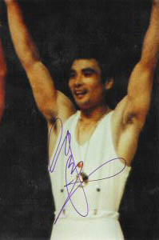

Mitsuo Tsukahara (JPN)
1970 World AA Silver Medalist
1976 Olympic AA Bronze Medalist
1972 and 1976 Olympic HB Champion

Medal Total
Olympic Games: 5
Gold, 1 Silver, 3
Bronze
World Championships: 4 Gold, 2
Silver
World Cup: 2 Gold, 1
Silver
Competition Results
1968
Olympic Games: 1st Team, 18th AA, 4th FX, 4th R
1970
Chunichi Cup: 5th AA
JPN-SUI-USA Meet: 1st Team, 3rd AA
NHK Cup: 3rd AA
World Championships: 1st Team, 2nd AA, 1st V, 2nd
R, 5th FX
1971
Chunichi Cup: 3rd AA
1972
Chunichi Cup: 3rd AA
Olympic Games: 1st Team, 8th AA, 1st HB, 3rd R
Riga International: 3rd AA, 2nd HB
1974
Moscow News International: 3rd AA, 3rd R, 3rd HB
Riga International: 2nd AA, 1st HB, 2nd R, 2nd PB
World Championships: 1st Team, 5th AA, 4th R, 6th HB
1975
Chunichi Cup: 7th AA
JPN-USSR Dual Meet: 1st Team, 1st AA
NHK Cup: 2nd AA
Pre-Olympics: 1st AA, 1st FX, 1st R, 1st PB, 1st HB, 6th PH
USA-JPN Dual Meet: 1st Team, 1st AA
World Cup: 5th AA, 1st R, 1st HB, 2nd PB, 4th V
1976
American Cup: 4th AA
NHK Cup: 3rd AA
Olympic Games: 1st Team, 3rd AA, 1st HB, 2nd V,
3rd PB
Tokyo Cup: 1st R, 2nd V
1977
American Cup: 1st AA
1978
American Cup: 5th AA
NHK Cup: 4th AA
World Championships: 1st Team, 15th AA (prelims)
This page was created on September
12, 2004.
© Gymn Forum